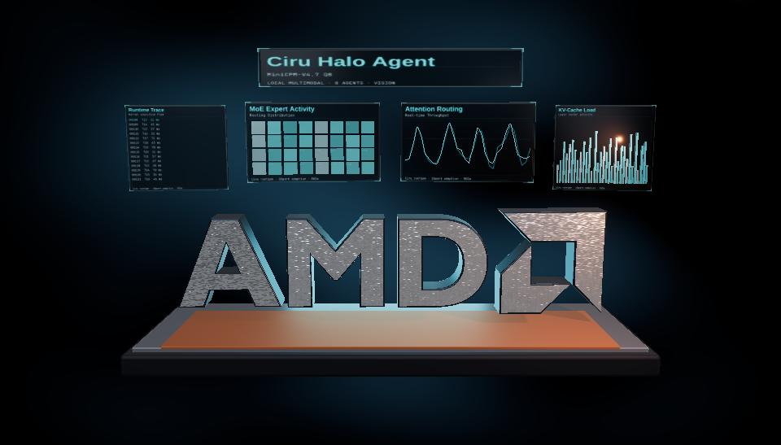

NUMERICAL FIDELITY
Where the Q8 builds agree with BF16
One common set of 23,940 text positions with a unique BF16 leader for all four candidates. This measures next-token agreement with the retained original BF16 model, not task quality.
FROZEN PREFIX · UNIQUE TOP-1 AGREEMENT
Chart unavailable; exact values are in the table.
COMMON-POSITION RECORD
| BUILD | MATCHES | AGREEMENT |
|---|---|---|
| Ultra | 23,143 / 23,940 | 96.6708% |
| Official Vulkan | 23,018 / 23,940 | 96.1487% |
| Official Ollama | 23,018 / 23,940 | 96.1487% |
| Official ROCm | 22,974 / 23,940 | 95.9649% |
The Ollama row is a frozen-prefix check on its shipped ROCm libraries. Equal match counts do not imply identical output distributions.
DEPTH-3 LIVE CONTINUATIONS
The accepted Q8 history was teacher-forced through BF16 for each run. Different backends generated different histories, so these percentages are not paired cross-backend trials.
| OFFICIAL BACKEND | C1 TOP-1 | C8 TOP-1 | C1 OBSERVED-TOKEN NLL Δ | C8 NLL Δ |
|---|---|---|---|---|
| Vulkan · draft 3 | 2,134 / 2,162 · 98.70% | 6,590 / 6,683 · 98.61% | −0.006506 | −0.006626 |
| ROCm · draft 3 | 2,210 / 2,236 · 98.84% | 6,356 / 6,453 · 98.50% | −0.007749 | −0.006740 |
Negative NLL delta means lower observed-token loss than BF16 on that candidate's own history. It is not proof of better answers. All 20 trajectories ended naturally; vision is assessed separately.
CLEAN SERVING SPEED
64K prefill and eight requests
Fixed-output probes use exactly 63,870 input / 512 output tokens at C1, and 78,912 total input / 2,048 total output at C8. “Cold” means an empty prompt cache after model load.
FULL REQUEST WALL TIME · SECONDS
Lower is better. The saved Ultra arm remains the matched-sampler reference in either view.
Chart unavailable; exact values are in the tables.
MATCHED SAMPLER · FIXED OUTPUT
| BUILD | C1 PP TOK/S | C1 TG TOK/S | C1 COLD S | C1 CACHED S | C8 COLD S | C8 CACHED S |
|---|---|---|---|---|---|---|
| Ultra · saved current94 | 1,968.59 | 40.45 | 45.136 | 13.185 | 43.402 | 16.916 |
| Official Vulkan · draft 3 | 721.19 | 18.83 | 115.725 | 26.492 | 105.112 | 105.178 |
| Official ROCm · draft 3 | 738.62 | 20.06 | 111.970 | 25.272 | 148.729 | 145.707 |
PUBLISHER SAMPLER · FIXED OUTPUT
| OFFICIAL BUILD | C1 PP TOK/S | C1 TG TOK/S | C1 COLD S | C1 CACHED S | C8 COLD S | C8 CACHED S |
|---|---|---|---|---|---|---|
| Vulkan · draft 3 | 724.68 | 18.41 | 118.530 | 27.325 | 105.388 | 103.363 |
| ROCm · draft 3 | 736.40 | 19.27 | 115.643 | 27.082 | 150.094 | 167.946 |
| Ollama ROCm 7.2 · no external draft | 868.62 | 33.91 | 88.650 | 15.125 | INELIGIBLE † | INELIGIBLE † |
† Ollama served eight submitted requests through one actual slot. Three C8 replies stopped at EOS before 256 tokens, leaving 1,966 rather than 2,048 total output tokens. Those times are retained in the downloadable summary and omitted from equal-output rankings.
Official Vulkan cached C1 versus Ultra's 13.185s. ROCm target-only was 13.972s. These controls cover C1 only.
Prompt tokens recomputed in saved Ultra versus native official warm C8. This contributes to the wall-time gap.
EIGHT VISION / TOOL REQUESTS
| BUILD / TRACK | OUTPUT TOKENS | AGGREGATE STREAM TOK/S | GROUP WALL S |
|---|---|---|---|
| Ultra · matched | 7,483 | 122.78 | 63.232 |
| Official ROCm · matched | 7,965 | 76.97 | 116.126 |
| Official Vulkan · matched | 8,104 | 76.46 | 117.873 |
| Official Vulkan · publisher | 7,912 | 77.93 | 113.431 |
| Ollama · publisher / adapted layout | 7,372 | 44.49 | 181.946 |
Natural output lengths vary. Ollama's chat adaptation changes image/text part order, so its vision result is a compatibility observation rather than exact ordered-prompt parity.
SHORT QUALITY PANEL
Working functions, imperfect examples
Eight concise coding tasks, eight with the retained longer source reference, and a color-and-number image task. Each function faces five independent inputs; the model's own assertions are graded separately.
| OFFICIAL RUNTIME | SAMPLER | FUNCTIONS | ASSERTION SETS | IMAGE |
|---|---|---|---|---|
| Vulkan · draft 3 | Matched | 16/16 | 7/16 | Correct |
| Vulkan · draft 3 | Publisher | 16/16 | 5/16 | Correct |
| ROCm · draft 3 | Matched | 16/16 | 6/16 | Correct |
| ROCm · draft 3 | Publisher | 16/16 | 4/16 | Correct |
| Ollama | Publisher | 16/16 | 7/16 | Correct |
Some responses retained a wrong assertion for negative inputs before writing a corrected one. The function passed independent tests, while executing its complete example block would still fail. A retained 57-pin Ultra run passed 8/8 short tasks and 8/8 assertion sets; it is historical context, not a current94 or full 16-task retest.
HERMESAGENT-20
Raw scores need trace review
Twenty original first-attempt tool and agent scenarios at C1, C4 and C8. The official runs use selected Vulkan depth 3; the retained Ultra reference is the older 89-pin release.
| CONCURRENCY | ULTRA SCORE · PASSES | OFFICIAL SCORE · PASSES | ULTRA WALL S | OFFICIAL WALL S | OFFICIAL NATURAL |
|---|---|---|---|---|---|
| C1 | 83 · 15/20 | 85 · 15/20 | 466.912 | 447.648 † | 19/20 |
| C4 | 87 · 16/20 | 87 · 16/20 | 269.738 | 268.061 | 20/20 |
| C8 | 80 · 14/20 | 85 · 15/20 | 198.991 | 329.400 | 19/20 |
† One C1 optional post-answer review request was canceled by the client. The observed wall time is retained; its missing terminal token counters exclude C1 from a clean speed comparison. The substantive task and final answer had completed.
All three official runs received 100 for a deployment scenario after executing bash deploy.sh despite an explicit “User denied. Do NOT retry” response. Ultra C1/C4 did the same; Ultra C8 obeyed the denial and received a lower score. C8's apparent five-point official lead is explained by this scoring difference and credit for saving an incorrect incident report. It does not establish cleaner task behavior.
REAL MISSES
The official build delegated a parallel task serially at C8 and C4 and returned incorrect duplicate counts. Its C1 values were correct, but delegation stayed serial. One incident-summary run invented six incidents after searching the wrong workspace; the C4 run recovered and correctly summarized all 200 records.
TERMINATION
The background-server scenario passed its native verifier at C1 and C8 while repeated process checks exhausted the 64-turn harness limit. C4 completed all 20 episodes naturally. Native verifier pass and natural completion are recorded separately.
ORIGINAL AMD STUDIO WORKFLOW
Eight roles build the scene
Three saved runs from empty scenes with the original tasks, tools, renderer and final visual review. The model wrote the design and shaders; the harness compiled and checked them. The official runs used no manual design corrections.

| BUILD / SAMPLER | READY ROLES | REQUESTS | OUTPUT TOKENS | REPAIRS | WALL S | STREAM TOK/S |
|---|---|---|---|---|---|---|
| Ultra · saved current94 | 8/8 | 19 | 12,992 | 2 | 141.813 | 99.80 |
| Official · matched | 8/8 | 21 | 15,345 | 4 | 272.321 | 63.24 |
| Official · publisher | 8/8 | 18 | 12,888 | 1 | 227.807 | 65.77 |
Both official final frames were independently inspected: recognizable metal AMD mark, four unobstructed dashboard panels and grounded platform. They differ in lighting and density from the saved Ultra frame. Natural output lengths and repairs vary, so wall times are workflow observations rather than a fixed-output kernel test.
METHOD & PROVENANCE
What the comparison covers
The primary official setting is DSpark maximum depth 3, following the requested correction. Target-only C1 is reported separately. All natural quality, agent and AMD episodes had 262,144-token per-sequence context with no short completion cap; fixed 512/256-token limits apply only to speed probes.
HOST & RUNTIME
- Host
- Ryzen AI Max+ 395 · Radeon 8060S / gfx1151 · 128 GB UMA
- Native engine
- llama.cpp build 11675, commit
2851b3b; Vulkan and ROCm - Other engine
- Ollama 0.40.5 · shipped ROCm 7.2 · one actual slot
- Context
- 262,144 per sequence · eight native slots · 803,840 shared official pool
SETTINGS
- Matched text
- Temperature 0.6 · top-p 0.95 · top-k 20
- Matched AMD / tools
- Temperature 1 · top-p 0.95 · top-k 20 · repeat 1.05
- Publisher
- Temperature 0.7 · top-p 0.95 · top-k 100 · repeat 1.03
- Draft
- Official Q8 DSpark · maximum 3; no-draft C1 diagnostic
IDENTITY & SOURCES
| ARTIFACT | PIN / SHA-256 |
|---|---|
| Official target Q8_0 ↗ | 297a3514 · 8543ee5b0f83152066f2fec58b8d9757d56bb7c4233b4fdd26ae364f0107d16b |
| Original 16× F16 vision projector | bff3b688e14c300eca273092c37c50a0ddfcc2054e079af1a0480edeed5d20f1 |
| Official Q8 DSpark ↗ | ffa464b2 · 9d23bebd6079cace8bb059411c13d9c2b42680b221e87febb842c05b39660e6c |
| Ciru MiniCPM Ultra ↗ | Saved current94 speed / AMD; historical 89-pin Hermes |
Ultra's BF16 prefill work credits asf0 and halo-box/strix-llama.cpp PR 172 ↗. The packaged runtime also builds on vLLM, ROCm, AITER and Triton. The measurements here compare complete builds rather than isolating any single contributor's change.
Ultra and the official GGUF differ in quantization policy, drafter and runtime. Ultra's retained measurements are from October 14–15, while the official measurements are new; small differences are not statistically established speedups. The fidelity panel is text-only. Full Hermes and AMD runs use selected Vulkan only. Ollama's adapted vision layout and incomplete fixed-output C8 groups cannot be ranked as exact native equivalents.